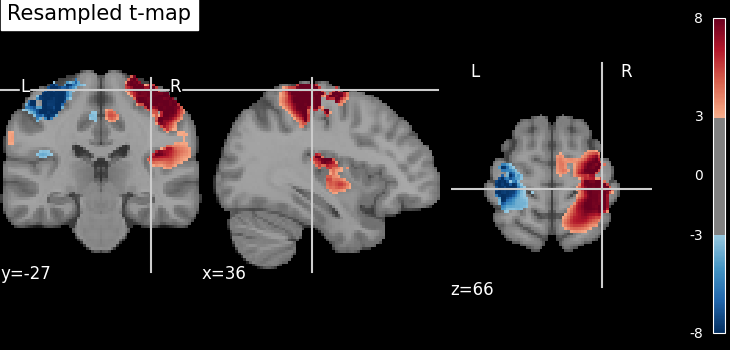
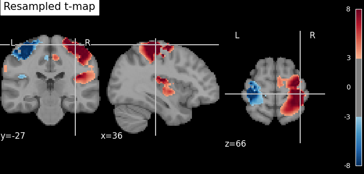

6.2. Manipulating images: resampling, smoothing, masking, ROIs…¶
This chapter discusses how nilearn can be used to do simple operations on brain images.
6.2.1. Functions for data preparation and image transformation¶
Nilearn comes with many simple functions for simple data preparation and transformation. Note that if you want to perform these operations while loading the data into a data matrix, most are also integrated in the masker objects.
Computing the mean of images (along the time/4th dimension):
nilearn.image.mean_imgApplying numpy functions on an image or a list of images:
nilearn.image.math_imgSwapping voxels of both hemisphere (e.g., useful to homogenize masks inter-hemispherically):
nilearn.image.swap_img_hemispheresSmoothing:
nilearn.image.smooth_imgCleaning signals (e.g., linear detrending, standardization, confound removal, low/high pass filtering):
nilearn.image.clean_imgSee also
To apply this cleaning on signal matrices rather than images:
nilearn.signal.clean
6.2.2. Resampling images¶
6.2.2.1. Resampling one image to match another one¶
nilearn.image.resample_to_img resamples an image to a reference
image.
 

This can be useful to display two images as overlays in some viewers (e.g., FSLView) that require all images to be on the same grid.
6.2.2.2. Resampling to a specific target affine, shape, or resolution¶
nilearn.image.resample_img specifies the resampling in terms of
the target_affine to match the spatial configuration defined by the new
affine.
Additionally, a target_shape can be used to resize images (i.e., cropping or padding with zeros) to match an expected data image dimensions (shape composed of x, y, and z).
Resampling can be useful to downsample images to increase processing speed and lower memory consumption.
On an advanced note, automatic computation of offset and bounding box can be performed by specifying a 3x3 matrix instead of the 4x4 affine. In this case, nilearn computes automatically the translation part of the transformation matrix (i.e., affine).

6.2.3. Accessing individual volumes in 4D images¶
nilearn.image.index_img: selects one or more volumes in a 4D image.nilearn.image.iter_img: loops over all the volumes of a 4D image.
See also
nilearn.image.concat_imgs: merge multiple 3D (or 4D) images into one 4D image by concatenation along the 4th (time) axisnilearn.image.load_img: load an image into memory. The benefit of this function is that it will convert various representations, such as filename, list of filenames, wildcards, list of in-memory objects, to an in-memory NiftiImage.nilearn.image.new_img_like: given data in a numpy array, creates a new image using an existing reference image for the metadata.
6.2.4. Computing and applying spatial masks¶
Relevant functions:
compute a mask from EPI images:
nilearn.masking.compute_epi_maskcompute a whole-brain, grey-matter or white-matter mask using the MNI template:
nilearn.masking.compute_brain_mask.compute a mask from images with a flat background:
nilearn.masking.compute_background_maskcompute for multiple sessions/subjects:
nilearn.masking.compute_multi_epi_masknilearn.masking.compute_multi_background_maskapply:
nilearn.masking.apply_maskintersect several masks (useful for multi sessions/subjects):
nilearn.masking.intersect_masksunmasking:
nilearn.masking.unmask
6.2.4.1. Extracting a brain mask¶
If we do not have a spatial mask of the target regions, a brain mask can be computed from the data:
nilearn.masking.compute_background_maskfor brain images where the brain stands out of a constant background. This is typically the case when working on statistic maps output after a brain extractionnilearn.masking.compute_epi_maskfor EPI imagesnilearn.masking.compute_brain_maskto compute a whole-brain, grey-matter or white-matter mask using the MNI template.
from nilearn.masking import compute_epi_mask
mask_img = compute_epi_mask(func_filename)
# Visualize it as an ROI
from nilearn.plotting import plot_roi
plot_roi(mask_img, mean_haxby)
##############################################################################

6.2.4.2. Masking data: from 4D Nifti images to 2D data arrays¶
fMRI data is usually represented as a 4D block of data: 3 spatial dimensions and one time dimension. In practice, we are usually interested in working on the voxel time-series in the brain. It is thus convenient to apply a brain mask in order to convert the 4D brain images representation into a restructured 2D data representation, voxel x time, as depicted below:

Note that in an analysis pipeline, this operation is best done using the masker objects. For completeness, we give the code to do it manually below:
# ----------------------------------------------------------
from nilearn.masking import apply_mask
masked_data = apply_mask(func_filename, mask_img)
# masked_data shape is (timepoints, voxels). We can plot the first 150
# timepoints from two voxels
# And now plot a few of these
import matplotlib.pyplot as plt
plt.figure(figsize=(7, 5))
plt.plot(masked_data[:150, :2])
plt.xlabel('Time [TRs]', fontsize=16)
plt.ylabel('Intensity', fontsize=16)
plt.xlim(0, 150)
plt.subplots_adjust(bottom=.12, top=.95, right=.95, left=.12)
show()

6.2.5. Image operations: creating a ROI mask manually¶
A region of interest (ROI) mask can be computed for instance with a statistical test. This requires a chain of image operations on the input data. Here is a possible recipe for computing an ROI mask:
Smoothing: Before a statistical test, it is often useful to smooth the image a bit using
nilearn.image.smooth_img, typically fwhm=6 for fMRI.Selecting voxels: Given the smoothed data, we can select voxels with a statistical test (eg opposing face and house experimental conditions), for instance with a simple Student’s t-test using scipy function
scipy.stats.ttest_ind.Thresholding: Then we need threshold the statistical map to have better representation of voxels of interest.
Mask intersection and dilation: Post-processing the results with simple morphological operations, mask intersection and dilation.
we can use another mask, such as a grey-matter mask, to select only the voxels which are common in both masks.
we can do morphological dilation to achieve more compact blobs with more regular boundaries. The function is used from
scipy.ndimage.binary_dilation.Extracting connected components: We end with splitting the connected ROIs into two separate regions (ROIs), one in each hemisphere. The function
scipy.ndimage.labelfrom the scipy library is used.Saving the result: The final voxel mask is saved to disk using the ‘to_filename’ method of the image object. (or nibabel.save).
See also
For extracting connected components:
A function
nilearn.regions.connected_regionscan be used readily on probabilistic atlas Nifti-like images whereasA function
nilearn.regions.connected_label_regionscan be used on atlases denoted as labels. For instance, atlases labelled using KMeans.